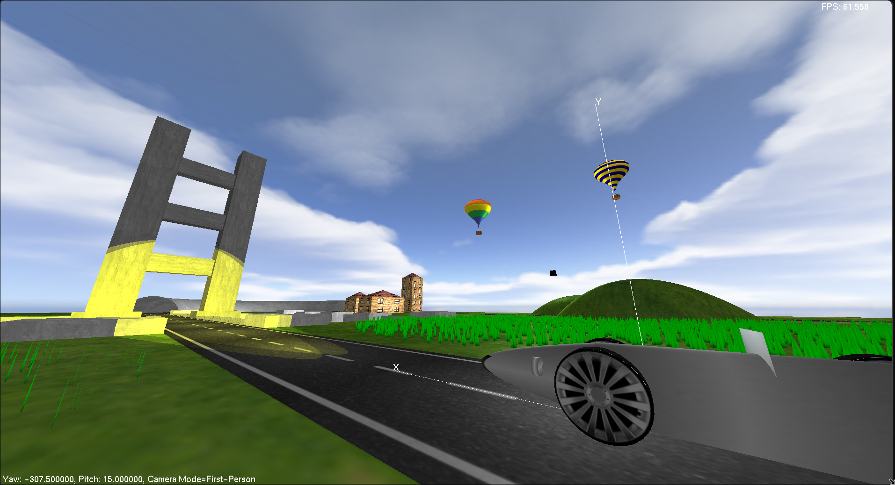
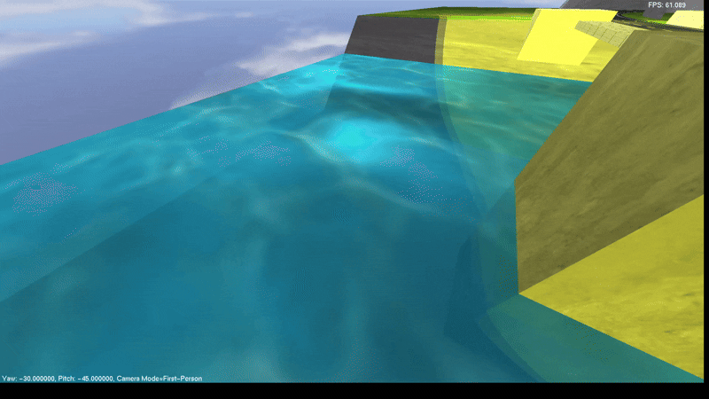

This was my submission for my intro to graphics programming final. It utilizes a custom save format to quickly add / remove models, dynamic lighting, a custom wave shader, and custom shapes generated at runtime.
float height = perlin(Texture + vec2(0.0, time * 0.3));
Which gives the height at that coordinate during the current dt. Then, the dx and dy are calculated by once again using the perlin noise function
float dx = perlin(Texture * 10.0 + vec2(0.01, time * 0.3)) - height;
float dy = perlin(Texture * 10.0 + vec2(0.0, time * 0.3 + 0.01)) - height;
The final values are interpolated with the actual surface normals to give the following result:
